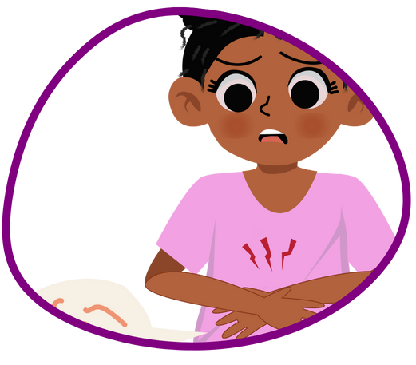

As verminoses são infecções parasitárias que podem afetar sua saúde de forma significativa. Conheça os sintomas, formas de prevenção e tratamentos eficazes para manter você e sua família protegidos. Fique informado e combata as verminoses com conhecimento!

Como se proteger
As verminoses são doenças provocadas por organismos genericamente chamados de vermes. Elas podem ser evitadas, na maioria das vezes, com simples hábitos de higiene.